Inhalt Index DeskTop Bronstein

 Algebra und Diskrete Mathematik Klassische algebraische Strukturen Vektorräume
Algebra und Diskrete Mathematik Klassische algebraische Strukturen Vektorräume


Um in abstrakten Vektorräumen Begriffe wie Länge, Winkel, Orthogonalität verwenden zu können, werden EUKLIDische Vektorräume eingeführt.
| 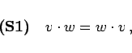 | (5.222) |
| 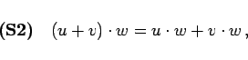 | (5.223) |
| 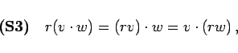 | (5.224) |
| 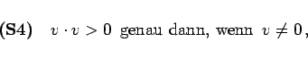 | (5.225) |
und  heißt Skalarprodukt auf 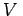. Ist auf V ein Skalarprodukt erklärt, so heißt V ein EUKLIDischer Vektorraum.
heißt Skalarprodukt auf 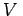. Ist auf V ein Skalarprodukt erklärt, so heißt V ein EUKLIDischer Vektorraum.
| 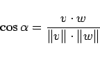 | (5.226) |
erklärt. Ist 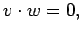 so werden v und w zueinander orthogonal genannt.
| Beispiel | ||||||||
|
Im Zusammenhang mit FOURIER-Reihen werden Funktionen der Form 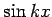 und 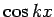 betrachtet. Diese Funktionen können als Elemente von 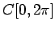 aufgefaßt werden. Im Funktionenraum C[a,b] wird durch
ein Skalarprodukt erklärt. Wegen
sind die Funktionen und für alle 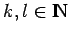 paarweise zueinander orthogonal. Diese Orthogonalität trigonometrischer Funktionen wird zur Berechnung der FOURIER-Koeffizienten bei der harmonischen Analyse ausgenutzt. |